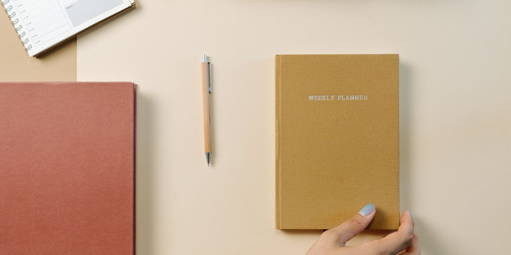
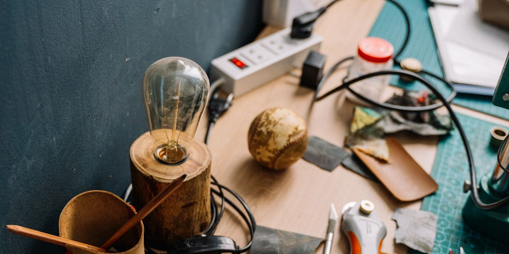

A portfolio in four chapters
Thomas Peter’s Portfolio!
Thomas Peters is an NJIT freshman in 2026. Explore his background, projects, skills, and ways to connect.
Begin the adventure
01 / The beginning
Curious about how things work.
Thomas wants to become an expert in mechanical engineering technology. Video games are another of his interests.
Explore About Me02 / The playground
Where play meets problem solving.
The Centurion Showdown calculator uses attack stats, defense stats, and elements to calculate battle damage.
Explore Projects
03 / The toolkit
A practical, creative toolkit.
Creative thinking, fast calculations, and hands-on ability meet empathy and resilience.
Explore Skills04 / The next hello
Start a conversation.
Say hello by email or find Thomas on Discord.
View Contacts